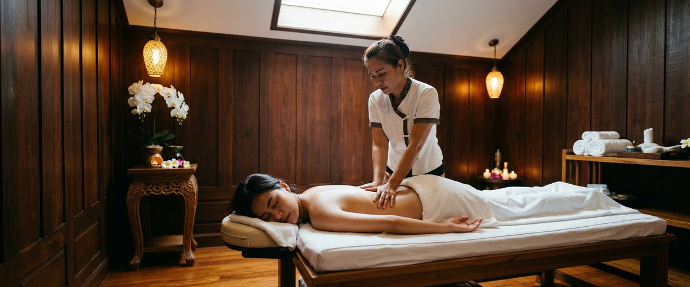
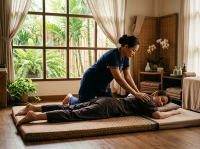

You already know what it feels like.

A jaw that won't unclench, shoulders that have crept up toward your ears, a neck that aches by midday. Stress and physical tension are not separate problems. They feed each other in a cycle that, left unaddressed, grinds you down over weeks and months. If you're looking for a genuinely effective way to relieve stress and tension, Thai massage offers something most approaches don't: it works on the body and the nervous system at the same time.
Stress is the body's response to pressure or threat. When the brain senses danger, it triggers the fight-or-flight response. Cortisol and adrenaline flood the body. Heart rate rises, muscles contract, and breathing shallows.

This response is useful in a real emergency. But when work deadlines and daily pressure trigger it again and again, the body pays a heavy price.
Chronic stress keeps muscles in near-constant low-level contraction. The shoulders, neck, jaw, and lower back take the most of it. Over time, this restricts blood flow, compresses nerves, and creates trigger points — knots of tight muscle that send pain into nearby areas.
NHS guidance on stress lists muscle tension, headaches, and a faster heartbeat as common signs the body is under sustained pressure.
The evidence for massage therapy is strong. A widely cited study in the International Journal of Neuroscience found that massage reduces cortisol and raises serotonin and dopamine. Across multiple studies, serotonin rose by an average of 28% and dopamine by 31%.
These are the chemicals your body uses to regulate mood, ease anxiety, and restore calm.
Traditional Thai massage works on both levels at once. Assisted stretching, rhythmic compression, and acupressure along the body's sen energy lines activate the parasympathetic nervous system. This shifts the body out of fight-or-flight and into genuine rest.
Tight muscles are lengthened through guided movement. Compressed tissue is released with steady, focused pressure. Circulation improves, clearing the stress-related waste that builds up in the muscles.
For tension in the upper body, a Thai head massage works directly on the scalp, neck, and upper shoulders — the areas stress hits hardest. Thai oil massage pairs slow, flowing strokes with deep pressure, extending the relaxation response across the whole body. You can book your session online to get started.
At Glasgow Thai Massage on West Nile Street, every session starts with a brief consultation. Maliwan or Jariya will ask where you're holding tension and what's been driving it. The session is then shaped around your body's actual needs — not a fixed routine applied to everyone.
For stress and full-body tension, traditional Thai massage is often the best starting point. You stay fully clothed while a sequence of assisted stretches and acupressure holds works through the body. Most clients notice a clear shift within the first twenty minutes.
The mind slows, the breath deepens, and the body stops bracing.
If you'd prefer warmth and oil work, Thai oil massage reaches the same result through a different method. Either way, you leave feeling measurably different from when you arrived. Book your appointment online and we'll take care of the rest.
The people who benefit most are those for whom stress is not an occasional event — it's a background condition. That means office workers carrying long screen hours in their neck and shoulders. It means professionals in Glasgow's financial and legal sectors, and parents running full schedules with no real recovery time.
If tension headaches are a regular occurrence, if your shoulders feel like they've been bracing for impact, or if you haven't felt genuinely rested in weeks — a session at Glasgow Thai Massage is not a treat. It's overdue.
The effects go well beyond temporary relaxation. Research in the International Journal of Neuroscience found real biochemical changes after massage — lower cortisol and higher serotonin and dopamine. These are physical shifts in the body, not just a pleasant feeling.
Regular sessions build on each other, lowering the baseline tension your body carries day to day.
For lasting results, monthly sessions are a fair minimum for moderate stress. Those with heavy chronic tension, or in high-pressure jobs, often do better with fortnightly sessions — especially early on.
A single session gives real relief. But regular treatment is what resets the pattern, not just eases it briefly.
Traditional Thai massage is especially effective because it targets both the muscles and the nervous system at the same time. The stretching and acupressure release physical tension while switching on the parasympathetic response.
Thai oil massage is a great choice if you prefer a slower, flowing approach with full-body contact.
Yes. Tension headaches and neck pain are among the most common signs of chronic stress — and massage addresses them well. Thai head massage works directly on the scalp, neck, and upper shoulders, releasing the tight muscles that send pain into the head.
Many clients with regular tension headaches notice clear relief after just a few sessions.
Absolutely. The shift Thai massage creates — from a stress state into genuine rest — has a direct effect on anxiety. The focused nature of the treatment also gives the mind a rare break from having to manage anything.
Many clients find this just as helpful as the physical work. If anxiety is significant, let your therapist know at the start so they can adjust the pace.
Most people notice a difference before the session ends. The change in breathing, the drop in muscle tension, and the sense of mental quiet usually arrive within the first 30 to 40 minutes.
Research backs this up, with single sessions showing measurable drops in cortisol and heart rate. Deeper, lasting benefits build with regular treatment over time.